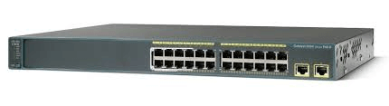
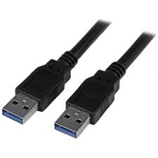
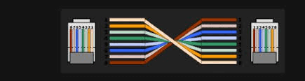
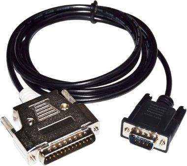

Redes - Configuración de un Switch Cisco Catalyst 2960
Para configurar un Switch Cisco Catalyst 2960, existen varios métodos de conexión física que pueden ser utilizados, dependiendo del equipo disponible. A continuación, se describen estos métodos y los pasos básicos para realizar la configuración.

Redes - Método de Conexión: USB
- Requisitos: Cable USB tipo A a mini USB, software de terminal (como PuTTY, Tera Term o SecureCRT), y drivers USB de Cisco instalados en tu PC.
- Pasos:
- Conecta el extremo mini USB en el puerto del switch y el otro extremo en tu PC.
- Asegúrate de que los drivers estén correctamente instalados.
- Abre el software de terminal y selecciona el puerto COM correspondiente.
- Configura los parámetros de conexión: Velocidad (Baud rate) 9600, Bits de datos 8, Sin paridad, Bits de parada 1, Sin control de flujo.

Redes - Método de Conexión: Rollover (Consola Serial)
Este método utiliza un cable Rollover, que conecta el puerto de consola RJ45 del switch a un puerto serial (DB9) en tu PC, ideal para equipos más antiguos.
- Requisitos: Cable rollover, adaptador RJ45 a DB9 (si tu PC no tiene puerto serial, necesitarás un adaptador de serial a USB).
- Pasos:
- Conecta el cable RJ45 en el puerto de consola del switch y el otro extremo en tu PC.
- Si es necesario, usa un adaptador serial a USB.
- Abre el software de terminal y configura los mismos parámetros que en la conexión USB.

Redes - Método de Conexión: DB5 Serial
Este método utiliza un cable Rollover, que conecta el puerto de consola RJ45 del switch a un puerto serial (DB9) en tu PC, ideal para equipos más antiguos.
- Requisitos: Cable rollover, adaptador RJ45 a DB9 (si tu PC no tiene puerto serial, necesitarás un adaptador de serial a USB).
- Pasos:
- Conecta el cable RJ45 en el puerto de consola del switch y el otro extremo en tu PC.
- Si es necesario, usa un adaptador serial a USB.
- Abre el software de terminal y configura los mismos parámetros que en la conexión USB.
